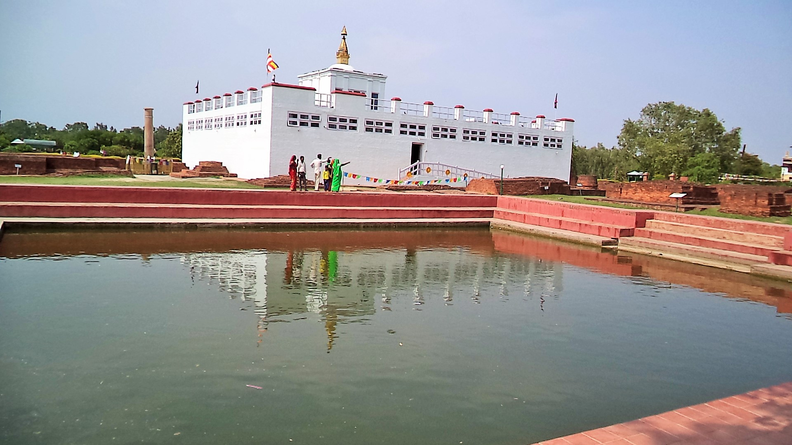
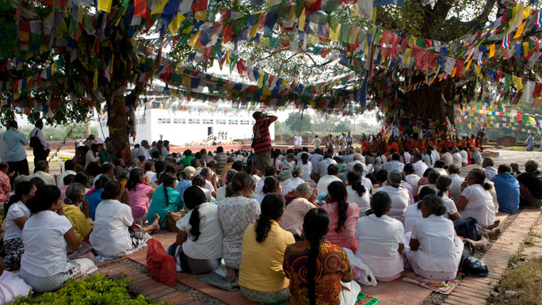
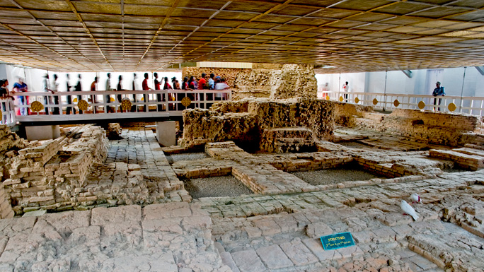
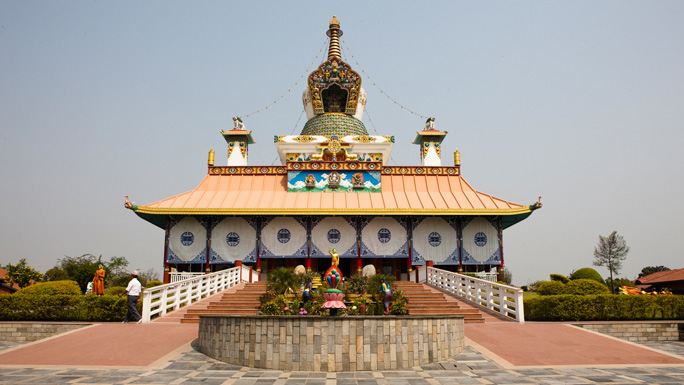
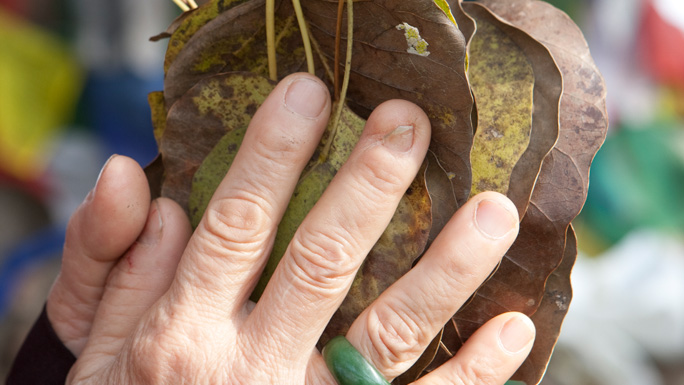
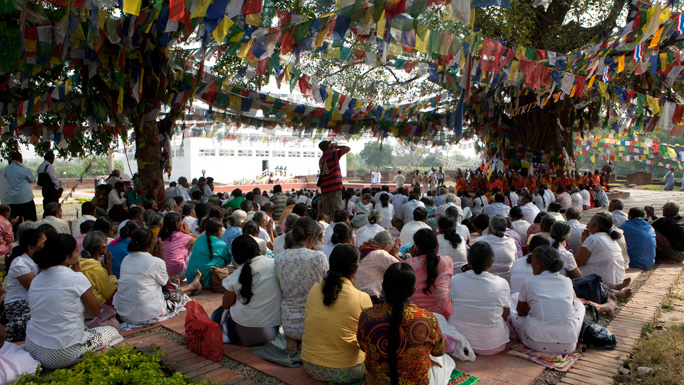
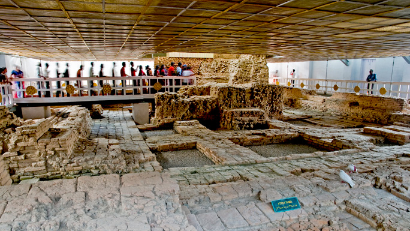
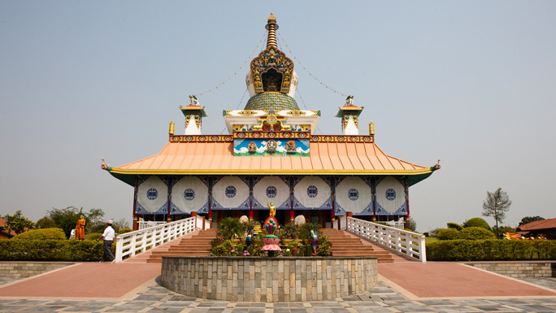
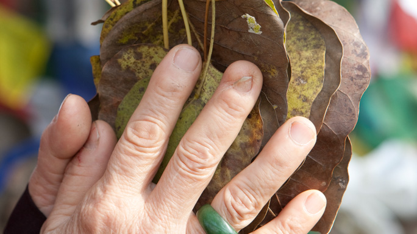

study Buddhism or meditate!
LUMBINI
Visit Buddha's birthplace or international Buddhist monasteries;study Buddhism or meditate!
One of the world's most important spiritual sites is home to the historic birthplace of the Buddha. Today you can visit over 25 international Buddhist monasteries, study Buddhism, meditation and visit Buddha's birthplace itself within the sacred Mayadevi Gardens!
 Mayadevi Temple is one of the important sites in the Lumbini Garden with many historians and archaeologists referring to it as the place of birth of Lord Buddha. Inscriptions on the Ashoka Pillar also refers the spot as his birthplace. It is said that here the newly born Prince took his first seven steps and gave a peace message to humanity.
 This happened in the beautiful Sal grove, which is now the focal point of the Lumbini Garden. Mayadevi, the Queen of Shakya King Suddhodhana of Kapilvastu, while passing through the Lumbini Garden, on the day of Baishakha Purnima (full moon day of May in 623 BC) took a bath in the Pushkarini (the Sacred Pond) and soon after she took support of a tree branch, and gave birth to the Prince Siddhartha, who became the Buddha.
Visit beautiful monasteries built by different Buddhist countries like China, Japan, Sri Lanka, Myanmar, Germany and observe the different architecture and prayer areas. Soak up the peaceful atmosphere and above all visit the Mayadevi Temple which dates back to 2,200 years, which archaeological evidence proclaim as the birthplace of Siddhartha Gautam or Lord Buddha in 623 BC.
 You can walk around the garden or find a peaceful meditative spot to contemplate. The focal point for pilgrims is a sandstone carving depicting the birth of the Buddha, reputedly left here by the Malla King Ripu Malla, in the 14th century, when Mayadevi was worshipped as an incarnation of the Hindu mother goddess. Another main attraction is the Ashokan Pillar, which was built by the great Indian Emperor Ashoka while visiting the birthplace of Buddha back in 249 BC.
One can visit the Panditarama Vipassana Center for some yoga and meditation and interact with the monks, who live in the vicinity of the monasteries, devoting their time to balancing the environment with religious worship.
 The Lumbini Garden covers an area of 2.56 sq km or 1 x 3 sq miles and encompasses three zones each covering one square mile connected with walkways and a canal. The area has sub tropical monsoon climate with warm wet season.
 Mayadevi Temple is one of the important sites in the Lumbini Garden with many historians and archaeologists referring to it as the place of birth of Lord Buddha. Inscriptions on the Ashoka Pillar also refers the spot as his birthplace. It is said that here the newly born Prince took his first seven steps and gave a peace message to humanity.
 This happened in the beautiful Sal grove, which is now the focal point of the Lumbini Garden. Mayadevi, the Queen of Shakya King Suddhodhana of Kapilvastu, while passing through the Lumbini Garden, on the day of Baishakha Purnima (full moon day of May in 623 BC) took a bath in the Pushkarini (the Sacred Pond) and soon after she took support of a tree branch, and gave birth to the Prince Siddhartha, who became the Buddha.
Visit beautiful monasteries built by different Buddhist countries like China, Japan, Sri Lanka, Myanmar, Germany and observe the different architecture and prayer areas. Soak up the peaceful atmosphere and above all visit the Mayadevi Temple which dates back to 2,200 years, which archaeological evidence proclaim as the birthplace of Siddhartha Gautam or Lord Buddha in 623 BC.
 You can walk around the garden or find a peaceful meditative spot to contemplate. The focal point for pilgrims is a sandstone carving depicting the birth of the Buddha, reputedly left here by the Malla King Ripu Malla, in the 14th century, when Mayadevi was worshipped as an incarnation of the Hindu mother goddess. Another main attraction is the Ashokan Pillar, which was built by the great Indian Emperor Ashoka while visiting the birthplace of Buddha back in 249 BC.
One can visit the Panditarama Vipassana Center for some yoga and meditation and interact with the monks, who live in the vicinity of the monasteries, devoting their time to balancing the environment with religious worship.
 The Lumbini Garden covers an area of 2.56 sq km or 1 x 3 sq miles and encompasses three zones each covering one square mile connected with walkways and a canal. The area has sub tropical monsoon climate with warm wet season.